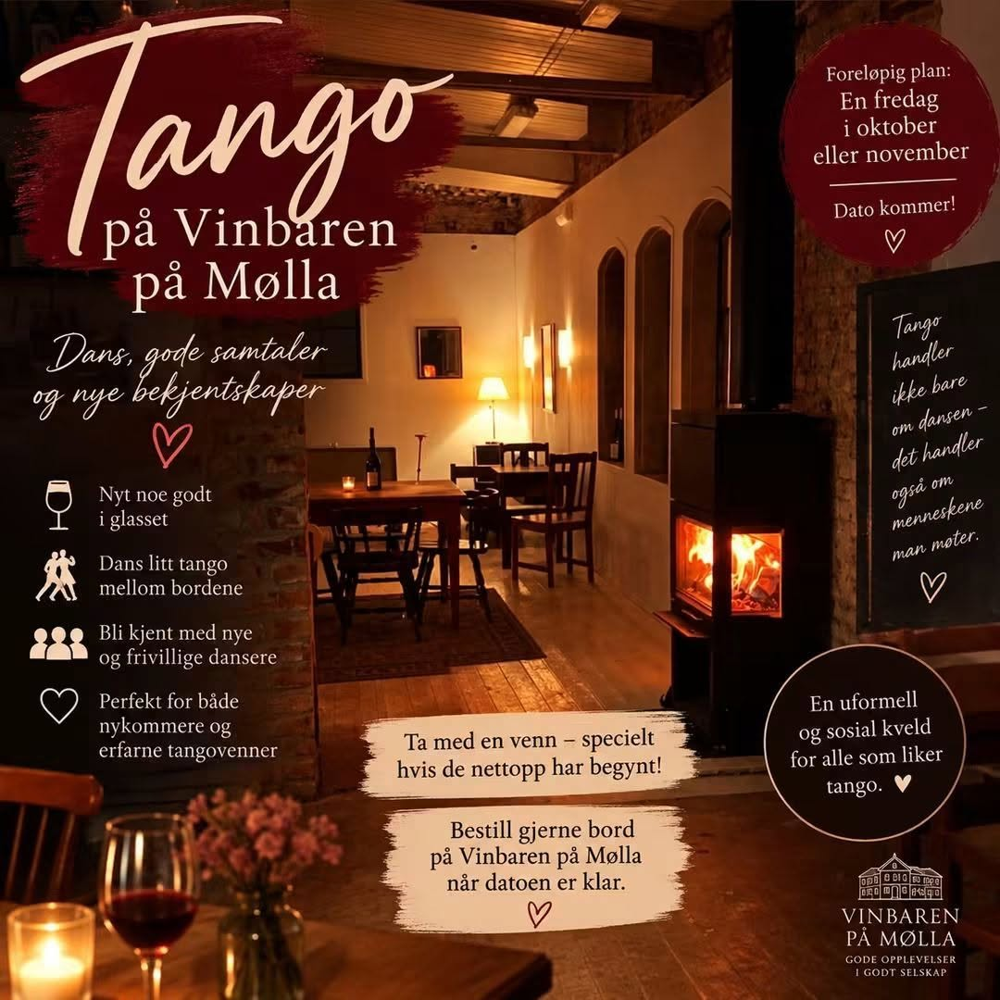

Tango er mer enn en dans. Det er en kulturform som rommer musikk, dans, poesi, sang og et sosialt fellesskap.
🌎 Río de la Plata – et møte mellom kulturer
Den argentinsk-uruguayanske tangoen vokste frem i bymiljøene rundt Buenos Aires og Montevideo mot slutten av 1800-tallet. UNESCO beskriver hvordan europeiske immigranter, etterkommere av afrikanske slaver og criollo-befolkningen møttes og blandet tradisjoner, uttrykk og skikker i Río de la Plata-regionen.
🎶 Fra marginalitet til verdensomspennende kultur
Tango hadde røtter i populære bymiljøer og ble etter hvert tatt opp av et langt bredere publikum. Argentinske kulturmyndigheter beskriver hvordan tangoen gikk fra en marginal posisjon til bred aksept, med et viktig internasjonalt gjennombrudd i Paris rundt 1910.
🎼 Musikken utvikler seg
Gjennom 1900-tallet utviklet tangoens musikalske språk seg gjennom orkestre, komponister og arrangører. Guardia Nueva representerte en viktig fornyelse av tangoens musikalske uttrykk, med blant andre Julio de Caro som en sentral skikkelse.
🎤 Carlos Gardel og tango canción
Carlos Gardel ble en av tangoens aller største symboler og en sentral skikkelse i utviklingen av tango som sangform. Hans betydning bidro sterkt til at tangoen fikk en identitet som også kunne formidles gjennom stemmen og teksten.
💃 Milongaen og det sosiale fellesskapet
Tango praktiseres i dag på milongaer – sosiale dansearenaer hvor musikk, dans, omgangsformer og fellesskap henger sammen. UNESCO fremhever at dette fellesskapet i dag omfatter musikere, dansere, koreografer, komponister, tekstforfattere og lærere, og at tangoen har tilpasset seg nye miljøer over hele verden.
🎹 Piazzolla og nye uttrykk
Astor Piazzolla utfordret grensene for tangoen og kombinerte tango med elementer fra blant annet jazz og klassisk musikk. Han bidro til å gjøre tango til et moderne og internasjonalt musikalsk språk.
🌍 Tango i verden i dag
Tango er ikke lenger bare en lokal kultur i Río de la Plata. Den danses og spilles over hele verden, samtidig som forbindelsen til Buenos Aires og Montevideo fortsatt står sentralt. I 2009 ble tango innskrevet av UNESCO på listen over menneskehetens immaterielle kulturarv som en argentinsk-uruguayansk tradisjon.
Kilder og videre lesning:
UNESCO – Tango · Argentina.gob.ar – Tangoens historie · Argentina.gob.ar – Astor Piazzolla